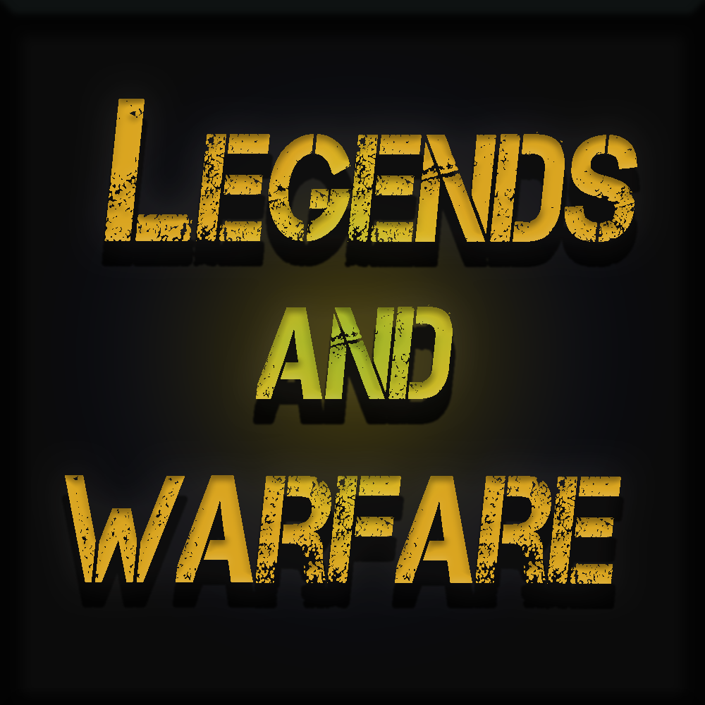
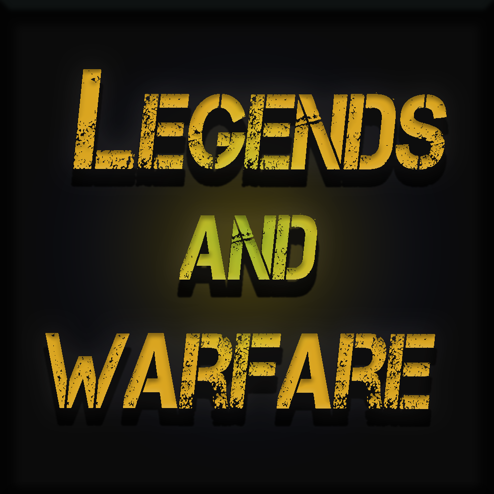
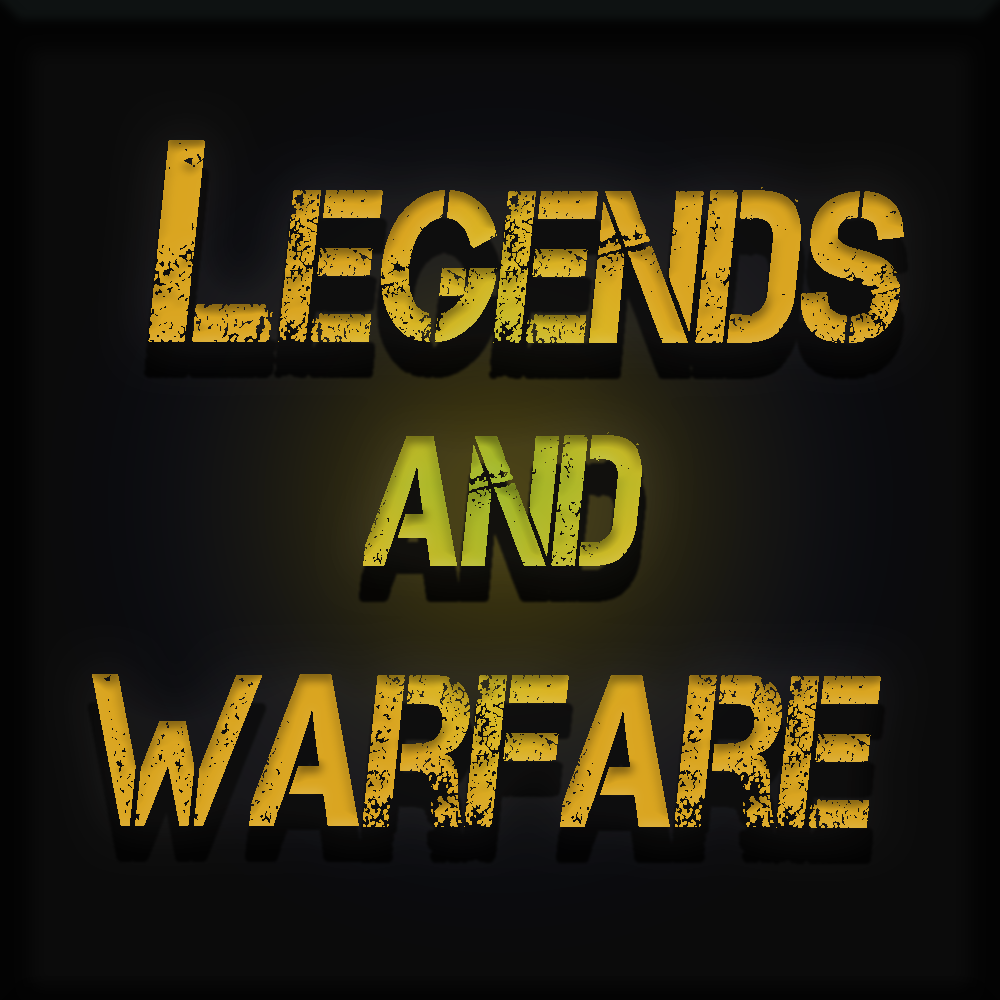
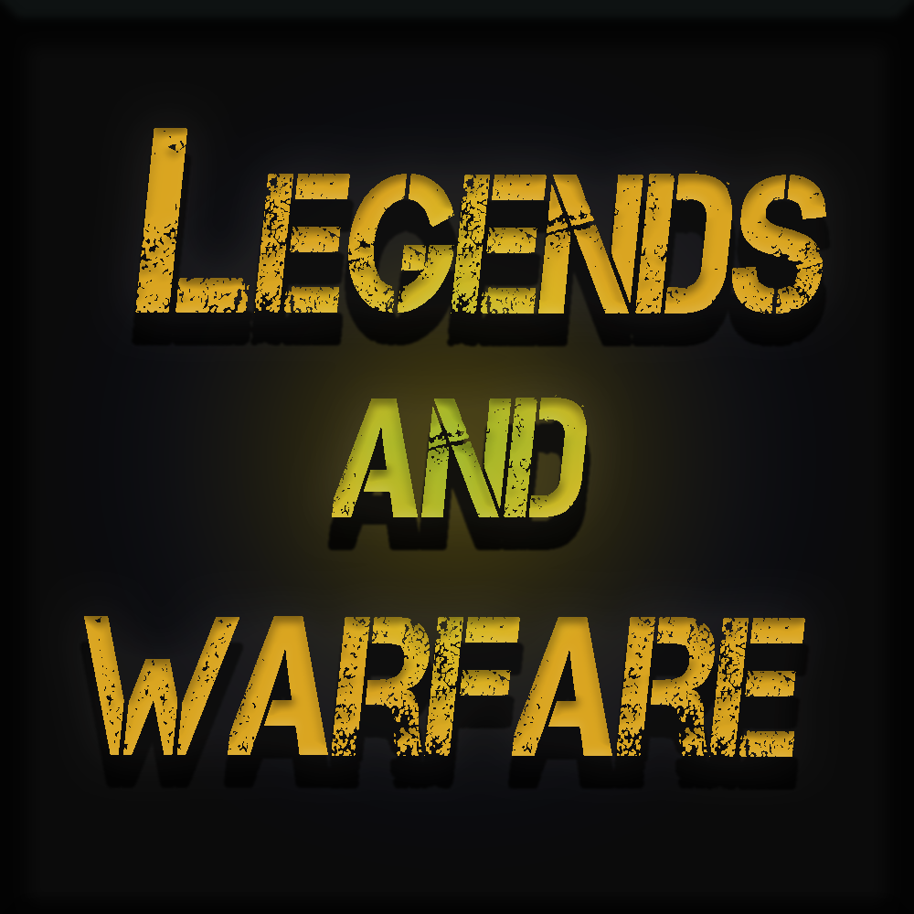

Below are the following projects I am currently working on/have worked on previously.
BEAT THE MACHINE: (WIP)
A Top Down 2D Shooter, planned to have an Alpha in Winter 2019.
LEGENDS AND WARFARE: (WIP)
A MOBA Style game, planned to launch at PAX East 2019.
- Worked on the Networking Code, specifically: Player Health, Player Stamina, and Movement
- Designed all 15 abilities found in the game, and programmed them to work across a network.
- Implemented the Steam API into LAW, so players Usernames and Icons were displayed in game, along with the ability to join friends active games.
 


